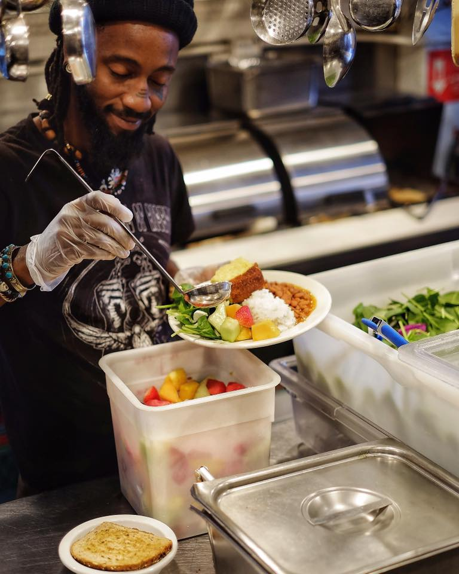
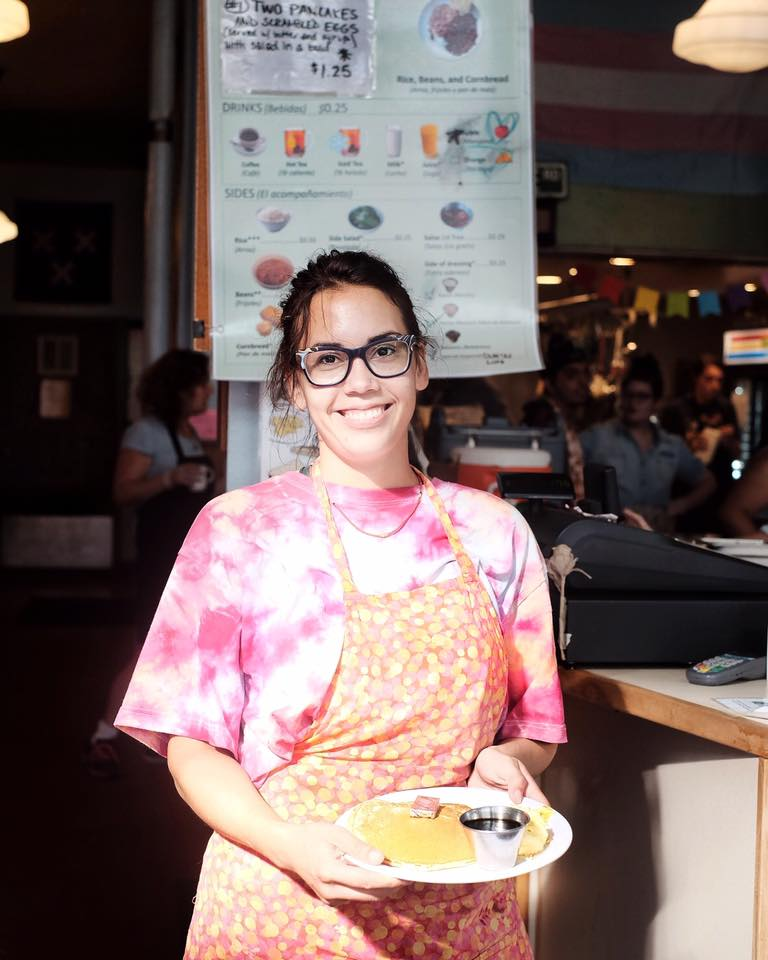
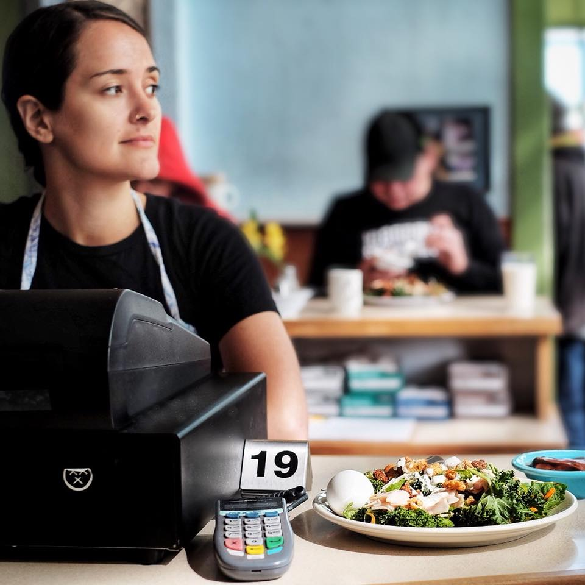
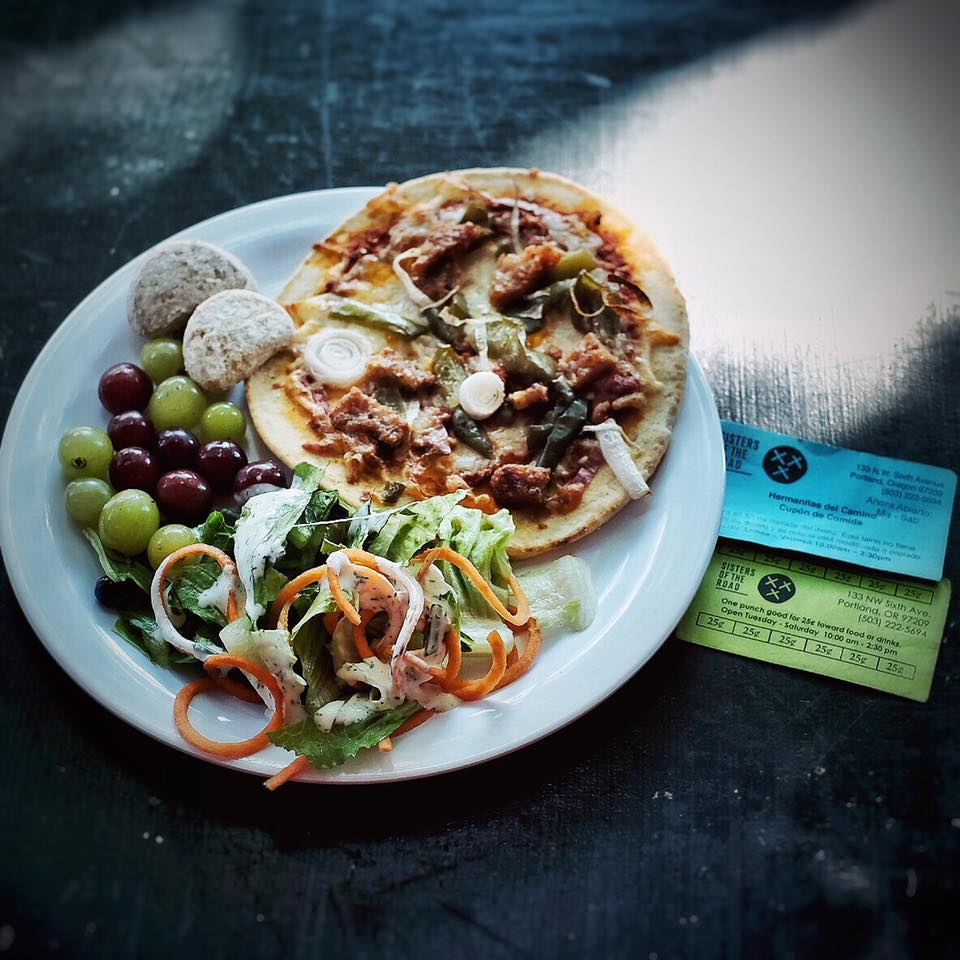

<!DOCTYPE html>
<html lang="en">
<head>
	<meta charset="UTF-8">
	<title>About Us</title>
	<meta name="viewport" content="width=device-width">
	<link rel="shortcut icon" href="favicon.ico" type="image/x-icon">
	<link rel="icon" href="favicon.ico" type="image/x-icon">
	<!-- meyer-reset is a special css library that overrides all the ugle default css styles that come with html5 -->
	<link rel="stylesheet" href="https://cdnjs.cloudflare.com/ajax/libs/meyer-reset/2.0/reset.min.css">
	<link rel="stylesheet" href="css/style.css">
</head>
<body>

  <section class="contentBorder">
		<div class="topBorder">
			
			<a class="topH1" href="index.html"><h1>SISTERS OF THE ROAD </h1></a>
	    <a class="topH2" href="about-us.html"><h1 class="topH2"> ABOUT US </h1></a>
	    <a class="topH3" href="join-us.html"><h1 class="topH2"> JOIN US!</h1></a>
	    <a class="topH4" href="ourmenu.html"><h1 class="topH2"> OUR MENU <h1></a>
		</div>

		<div class="leftBorder">
			<h1 class="leftH2">PROFOUNDLY ABOUT LOVE SINCE 1979</h1>
		</div>

		<div class="middleBorder">
		</div>

		<div class="rightBorder">
			<a class="rightH1" href="index.html"><h1 class="">MORE RESOURCES</h1></a>
	    <a class="rightH2" href="index.html"><h1 class="">GET INVOLVED</h1></a>
	    <a class="rightH3" href="index.html"><h1 class="">CONTACT US</h1></a>
		</div>

		<div class="bottomBorder">
			<h1 class="bottomH2"><em id="bottomEm">OPEN </em>Tuesday—Saturday 10AM—2PM <em id="bottomEm">CLOSED </em>Sunday—Monday</h1>
		</div>

	</section>

  <section class="backgroundImages-3">

		
		<div id="ju-Box">
      <section class="ju-content">
				<p id="ju-p1">Sisters of the Road Cafe is a low-cost restaurant where you can pay for a fresh, healthy meal with cash, E.B.T. or by trading some time volunteering in the Cafe for Barter Credit.</p> <br><br>
				<h1 id="ju-h1">HERE IS HOW TO GET A MEAL!</h1><br><br>
				<h2 id= "ju-h2">SCROLL DOWN FOR STEP ONE</h2><br>
			</section>
	</section>
	<section class="backgroundImages-4">

		
		<div id="ju-Box-2">
			<section class="ju-content-2">
				<p id="ju-h3">STEP ONE</p><br>
				<h1 id="ju-h4">MAKE A RESERVATION<h1><br>
				<p id="ju-p2">To eat in the Cafe, you’ll need to make a reservation. This helps us make sure that everyone get the opportunity to eat with us and prevents long lines from forming outside the building.</p><br>
				<p id="ju-p3">Reservations can only be made in person and are only good for the day you make them.<br><br>

We begin taking reservations outside the Cafe at 9:15am. After 10:00am you can pick up your reservation from the Reservation Desk in the Cafe lobby.<br><br>

The slip will look like the image one our customer Josie is holding on the left!<br><br>

HOLD ON TO YOUR SLIP! You’ll need it to order at the register!</p><br>
				<h2 id= "ju-h2">SCROLL DOWN FOR STEP TWO</h2><br>
			</section>
	</section>

	<section class="backgroundImages-5">

		
		<div id="ju-Box-3">
			<section class="ju-content-3">
				<p id="ju-h3">STEP TWO</p><br>
				<h1 id="ju-h4">ORDER YOUR MEAL<h1><br>
				<p id="ju-p3"> 1. Line up at the register in the Cafe during your reservation time.<br><br>

2. You can order up to $4.00 of items from the menu.<br><br>

3. Take a seat, your food and drinks will be out soon!<br><br>

4. Our menu changes every week to see the menu for this week click here<br><br>

*HOLD ON TO YOUR SLIP! You’ll need it to order at the register!</p><br>
				<h2 id= "ju-h2">SCROLL DOWN FOR STEP THREE</h2><br>
			</section>
	</section>

	<section class="backgroundImages-6">

		
		<div id="ju-Box">
			<section class="ju-content-4">
				<p id="ju-h3">STEP THREE</p><br>
				<h1 id="ju-h4">HOW TO PAY<h1>
				<p id="ju-p2">Sisters accepts the following methods of payment only. YOU’LL NEED TO EARN BARTER CREDIT BEFORE USING IT TO PURCHASE FOOD. </p><br><br>
				<p id="ju-p4">1. CASH</p>
				<p id="ju-p3">We do not accept credit cards, debit cards, or checks.</p><br>
				<p id="ju-p4">2. EBT FOOD BENEFITS</p><br>
				<p id="ju-p4">3. BARTER CREDITS</p>
				<p id="ju-p3">
					15 minutes of volunteer time covers the cost of an entré and a drink.You can volunteer for longer jobs too. Meals are earned at the rate of 4 per hour of volunteer time. Barter Credits are paid with green punch cards that look like the image on the left. </p>
			</section>
	</section>
</body>
</html>
